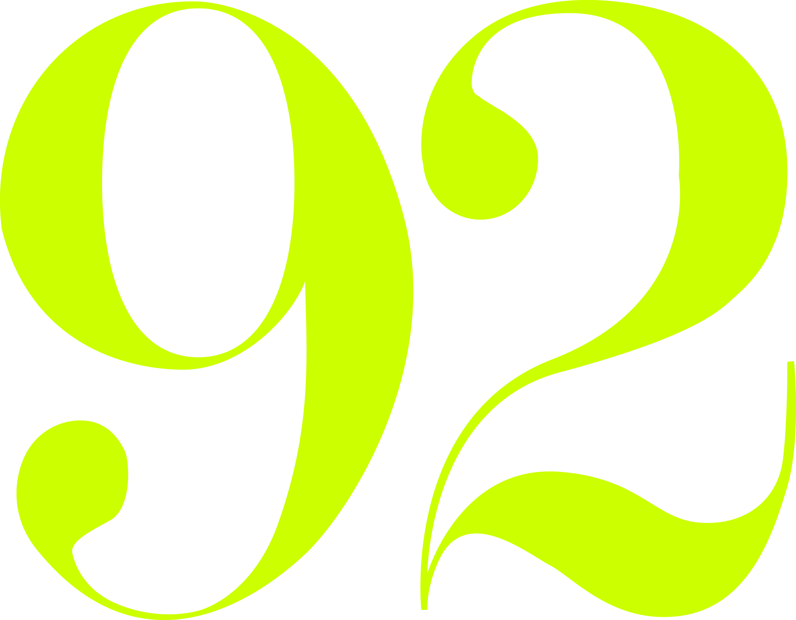

Some of my literary heroes have appeared in years past at 92NY. Doesn’t that make it okay?
We can’t speak on behalf of James Baldwin, Toni Morrison, Allen Ginsberg, Gwendolyn Brooks, and others who are no longer among us, but we can say with relative confidence that if these legendary, principled, outspoken artists were alive today, in the age of a US-backed Israeli genocide in Gaza, they too would say NO to 92NY.
Who are some of the people who have canceled appearances?
Since Viet Thanh Nguyen’s cancellation, many writers and artists including Dan Chiasson, Dionne Brand, Nikky Finney, Chris Kraus, Hannah Gold, Paisley Rekdal, Christina Sharpe, Andrea Long Chu, and Saidiya Hartman, have publicly withdrawn from events at 92NY. As of April 2026, at least 35 writers have cancelled scheduled appearances or refused invitations to perform.
This scheduled event was supposed to be very important for my career. Why should I give up an opportunity for exposure?
We invite people asking this question to consider it differently: This stage and venue is tainted by 92NY's actions throughout the genocide — like canceling its entire literary season over a single writer's opposition to the genocide in Gaza, firing employees for wearing and displaying symbols with support for Palestine, or hosting events with Israeli politicians and military officials and other public figures who justify the genocide, dehumanize Palestinians, and call for war on Iran and Lebanon.
I am scared to withdraw because I am worried about being attacked publicly by pro-Israel organizations and I don't want to get in trouble. What should I do?
It can feel daunting to speak truth to power, especially when doing so has led to the silencing and removal of many people in different fields and professional spaces. It is up to you whether to make your decision public, but remember that there is safety in numbers: The more who speak out, the easier and safer it will be for others to do this without fear.
I am scheduled to speak or perform at 92NY, but I will use my time to condemn Israel's genocide in Gaza or mention Palestine. Does that work as an alternative?
This might seem like a fair and tempting compromise, but it is not an effective strategy. This is not a question of changing the hearts and minds of the 92NY audience: this is about the organization itself, and the most powerful and meaningful course of action is to exert pressure collectively and where it matters most, which is on its programming.
I know staff members who are working hard to address the concern and bias against Palestinians at 92NY. Isn't it more effective to address this internally?
Internal repression at 92NY predates the genocide in Gaza, and until now pressure from well-intentioned staffers has not worked. The organization has not only refused to apologize, they have publicly doubled down on their position. In addition to using their programming to make 92NY a safe space for the genocide-promoting American political and media class, they updated their mission statement during the genocide to include: “We believe in the importance of civic engagement and working for the betterment of the United States, our home, and Israel, the homeland of the Jewish people."
I was invited to contribute to an event that has nothing to do with Palestine or the genocide. Do I still have to withdraw my participation? Why?
Yes. 92NY holds power as a cultural institution, and any event — whether or not it relates to the genocide — contributes to that credibility. It is the responsibility and obligation for all artists, writers, public thinkers and intellectuals to stand against genocide and for freedom of expression. You have to ask yourself, knowing this information, is it worth it for the credibility and integrity of your work to be compromised by an association with this institution?
I have spoken or performed at 92NY in the past. Should I make a statement?
Yes. We enthusiastically welcome you to publicly condemn 92NY's actions and support our campaign.
Should I attend cultural events at 92NY?
No. 92NY and similarly significant cultural institutions draw out audiences who are, themselves, thinkers, artists, and writers. By contributing financially and filling these spaces, you are also contributing to the problem.
What if I want to go to an event that has nothing to do with Palestine. Should I still attend?
No, as stated above, supporting any of its programming is legitimizing its positions.
I already have tickets for a 92NY event. Should I still go?
No. Empty seats make a difference.
I use 92NY as a community center and I attend classes there. Should I cancel my membership?
No. 92NY's cultural programming is the focus of this campaign, not its broader offerings.
92NY was the place to see all of my favorite authors. What are the alternative venues where I can go to see these kinds of performances?
In light of the organization's commitment to platforming extreme pro-Israel and pro-war pundits who proudly voice anti-Palestinian racism on the stage, writers of conscience are withdrawing from events at 92NY, which is severely impacting the quality of its programming. Therefore, you are likely to find today's most important writers at other venues. We've prepared a helpful list of venues and organizations with cultural programming that is not ethically compromised.
How do I support the campaign?
Speak up and share the 92NO campaign with your friends — whether that's on social media, newsletters, podcasts or other platforms. When your favorite artists announce performances or contributions there, please encourage them to say NO to those events.
Who is behind this campaign?
The 92NO team is a collective of autonomous artists and writers who seek to spread awareness of 92NY’s cultural programming that supports genocide and war and to organize others to withhold their labor from the institution.
Other questions?
Reach out to 92no@proton.me!